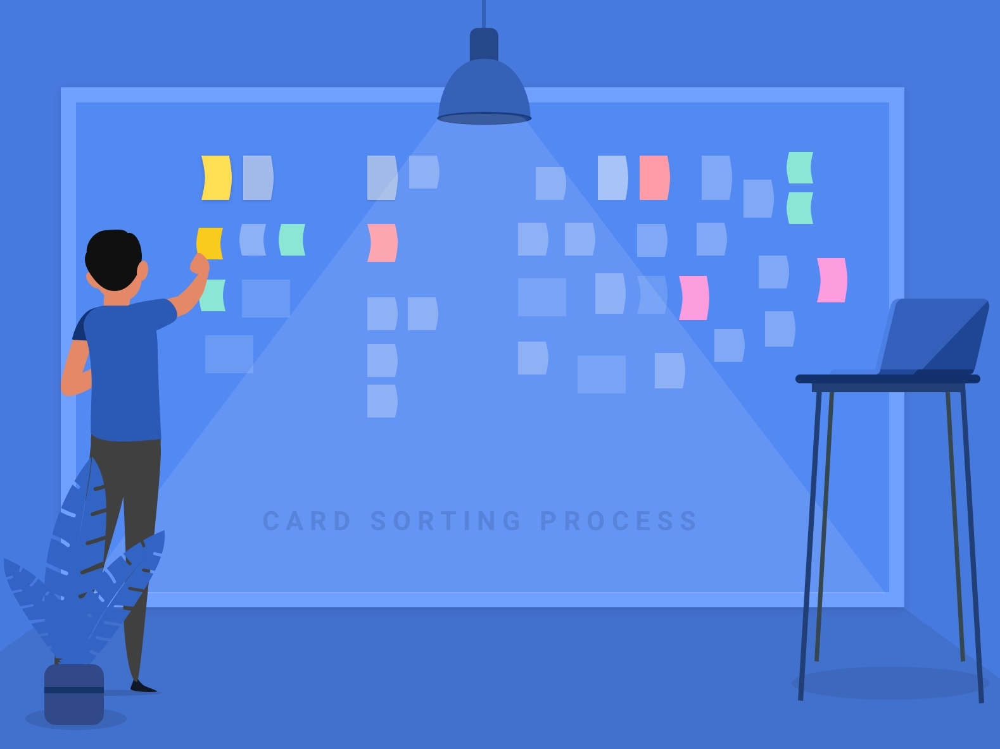
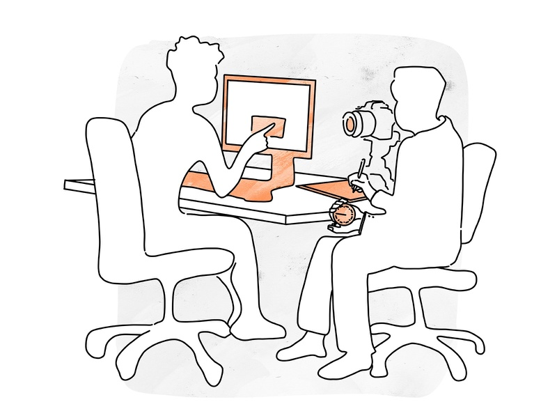
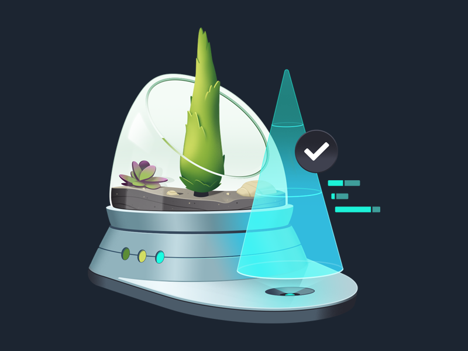
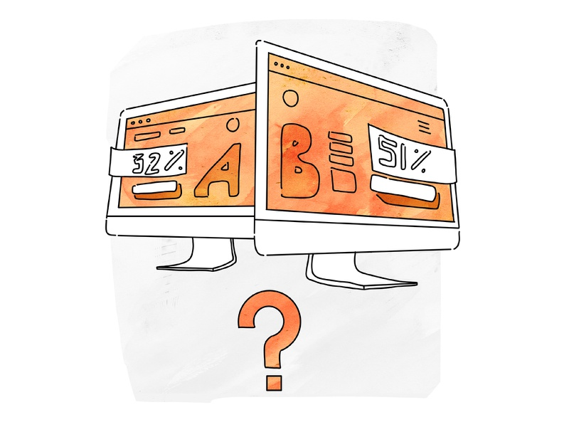
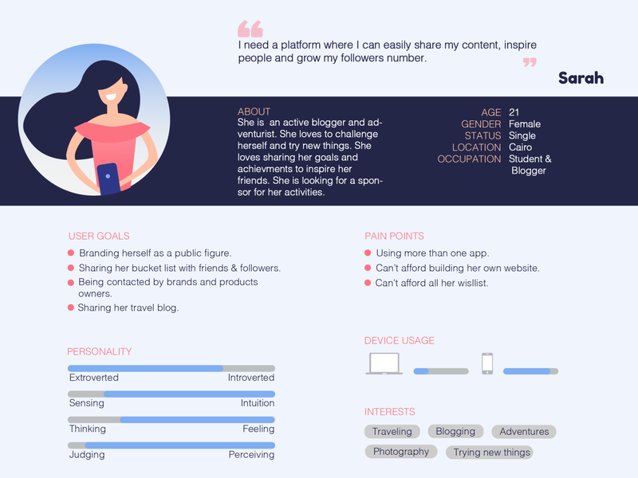

- Likes: 56
- Comments: 2
- Likes: 89
- Comments: 5
Gallery
- Likes: 42
- Comments: 1

Video
- Likes: 38
- Comments: 0

Gallery
- Likes: 47
- Comments: 1

- Likes: 94
- Comments: 3

Gallery
- Likes: 52
- Comments: 4

- Likes: 66
- Comments: 2
Gallery
- Likes: 45
- Comments: 0
- Likes: 34
- Comments: 1
- Likes: 41
- Comments: 0
Video
- Likes: 30
- Comments: 2